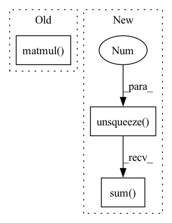

Pattern ID :39411

Before Change
wt = torch.softmax(torch.matmul(kt, self.Mk), dim=-1)
// Read Process
rt = torch.matmul(wt, self.Mv)
ft = torch.tanh(self.f_layer(torch.cat([rt, kt], dim=-1)))
pt = torch.sigmoid(self.p_layer(ft)).squeeze()
// Write Process
After Change
wt = torch.softmax(torch.matmul(kt, self.Mk), dim=-1)
// Read Process
rt = (wt.unsqueeze(-1) * Mvt).sum(1)
ft = torch.tanh(self.f_layer(torch.cat([rt, kt], dim=-1)))
pt = torch.sigmoid(self.p_layer(ft)).squeeze()
// Write Process
In pattern: SUPERPATTERN
Frequency: 3
Non-data size: 3
Instances
Fragment ID: 111887127
Project Name: hcnoh/knowledge-tracing-collection-pytorch
Commit Name: aa0d2a8d0efc4a9ba28dba75c7b8e7e6a3310202
Time: 2021-03-21
Author: rhc0624@gmail.com
File Name: models/dkvmn.py
M Class Name: DKVMN
N Class Name: DKVMN
M Method Name: forward(3)
N Method Name: forward(3)
M Parent Class: Module
N Parent Class: Module
M File Name: models/dkvmn.py
N File Name: models/dkvmn.py
M Start Line: 43
M End Line: 46
N Start Line: 39
N End Line: 51
'>
Before Change
b_ = bandwidth.item()
G = torch.Tensor(cpu_compute_softdtw_backward(D_, R_, g_, w_, b_)).to(dev).type(dtype)
tmp_G = G*torch.sign(raw_D)
dR_X = tmp_G.matmul(torch.ones(D.shape[0], D.shape[2], X.shape[2], dtype=dtype, device=dev))
return grad_output.view(-1, 1, 1).expand_as(dR_X) * dR_X, None, None, None, None, None
After Change
w_ = warp.item()
b_ = bandwidth.item()
G = torch.Tensor(cpu_compute_softdtw_backward(D_, R_, g_, w_, b_)).to(dev).type(dtype)
tmp_G = G.unsqueeze(-1).expand(-1, -1, -1, H)
tmp_G = tmp_G * torch.sign(raw_D)
dR_X = tmp_G.sum(dim=2)
return grad_output.view(-1, 1, 1).expand_as(dR_X) * dR_X, None, None, None, None, None
'>
Fragment ID: 111887126
Project Name: keonlee9420/parallel-tacotron2
Commit Name: 1f98efe5d09778b2b77e291aff63ef6e497c6bb9
Time: 2021-07-26
Author: 1531820402@qq.com
File Name: model/soft_dtw_cuda.py
M Class Name: CPUSoftDTW
N Class Name: CPUSoftDTW
M Method Name: backward(2)
N Method Name: backward(2)
M Parent Class: Function
N Parent Class: Function
M File Name: model/soft_dtw_cuda.py
N File Name: model/soft_dtw_cuda.py
M Start Line: 257
M End Line: 259
N Start Line: 246
N End Line: 255
'>
Before Change
G = G[:, 1:N + 1, 1:M + 1] // dR_D
tmp_G = G*torch.sign(raw_D)
dR_X = tmp_G.matmul(torch.ones(B, M, H, dtype=dtype, device=dev))
return grad_output.view(-1, 1, 1).expand_as(dR_X) * dR_X, None, None, None, None, None
After Change
cuda.as_cuda_array(E), cuda.as_cuda_array(G))
G = G[:, 1:N + 1, 1:M + 1] // dR_D
tmp_G = G.unsqueeze(-1).expand(-1, -1, -1, H)
tmp_G = tmp_G * torch.sign(raw_D)
dR_X = tmp_G.sum(dim=2)
return grad_output.view(-1, 1, 1).expand_as(dR_X) * dR_X, None, None, None, None, None
'>
Fragment ID: 111887125
Project Name: keonlee9420/parallel-tacotron2
Commit Name: 1f98efe5d09778b2b77e291aff63ef6e497c6bb9
Time: 2021-07-26
Author: 1531820402@qq.com
File Name: model/soft_dtw_cuda.py
M Class Name: _SoftDTWCUDA
N Class Name: _SoftDTWCUDA
M Method Name: backward(2)
N Method Name: backward(2)
M Parent Class: Function
N Parent Class: Function
M File Name: model/soft_dtw_cuda.py
N File Name: model/soft_dtw_cuda.py
M Start Line: 132
M End Line: 159
N Start Line: 135
N End Line: 156